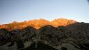
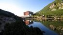
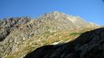

Slovenská jeseň 2016
2016 · Slovensko, Vysoké Tatry
Slovenská jeseň 2016
No tak ako by som začal, ani neviem, hádam len to, že moc sme sa teda nepredviedli túto jeseň,moc sme nepoliezli toho, asi to bolo tým, že nejako sme sa netriafali v termínoch, ale hlavne tohto jesenným úbytkom spolulezcov – Predseda sa pripravoval na svoju expedíciu do Nepálu a v kľude a s odpojenou pevnou linkou si balil doma kufre J no a potom si len tak odišiel na 4 týždne, potom sa ďalšie dva zotavoval no a to už bola zima. Druhú stratu sme zaregistrovali zdá sa už takú trvalejšiu u nášho člena Fištrónka, ktorý má toho moc..všade a ešte aj čakajú druhé bábo tak po večeroch struhlíka detskú postielku. No. A to bolo vlastne 50% členov klubu, keďže sme 4 aktívni. No a ked k tomu ešte pripočítame, že počasie v Tatrách tomu moc neprialo-nejako priskoro napadol sneh a to aj 2x, tak je jasné, že sme vlastne takmer nikde neboli až na jeden výlet, kedy sme vlastne v Tatrách boli J
Najprv by som však spomenul v krátkosti náš spoločný výlet mimo poradia. Bol to pre nás dôležitý výlet. Náš už takmer bývalý aktívny člen Luboško oslávil životné jubileum- okruhliny. Keďže nikto z nás okrem predsedu nie je nejako moc spoločensky založený oslavovací typ, tak sme sa rozhodli osláviť to tak po svojom, čiže nie na rodinnej oslave, ale pekne v uzavretom kruhu na aký sme zvyknutí, t.z. naša stará klubová partia v lone prírody – v Tatrách J. Čiže oslávenec Lubenko+predsedníctvo. Takže na víkendový výlet sme sa vybrali spolu, reku stráviť nejakú tu spoločnú chvílu, pokecať o všetkom možnom, pripiť si na Lubové zdravie no a popri tom sa aj prejsť trošku. Všetko sa nám z toho podarilo, našu štvoricu počas víkendu vždy nejako vhodne doplnila nejaká postavička mihotajúca sa naším víkendovým životom... Užili sme docela srandy, začalo to už ráno keď sme čakali pred Sliezkym, kým ho otvoria, aby sme si mohli dať pivečko skôr ako vyrazíme na túru. Ano výšlap to bol pekný – Gipsyho feratkou na Gerlach až po nočnú jazdu električkou z Hágov cestou do BC, haaa keď si spomeniem ako nás predseda učil v elektrike pískať ešte teraz. sa smejem. Tých vtipných situácíí bolo za celý deň strašne moc, popisovať to by bolo stááášne na dlho, ale víkend takto strávený bola naozaj fajná oslava narodenín. Šme še pobavili, každý kto bol vie svoje, pamätá si a sú proste veci, ktoré sa zo šatne nevynášajú J





Ten jeden lezecký výlet sme absolvovali s Horárom Ivuškom vo dvojici z horeuvedených dôvodov nedostatku alpinistov v našom klube. Neviem kedy to bolo, či v týždni, či cez víkend, no viem, že mimoriadne pekne a jesenno bolo v tie dni v Tatrách. Nuž vybrali sme sa na Brnčalku. Nechodíme do tej oblasti moc často, už ani neviem prečo, asi preto, že vždy býva chata plná, ale je fakt, že kolorit má fantastikuš a na lezenie je tam tohooooo kam len oko dovidí. Išli sme reku uvidíme čo a kam zamierime. V prvom rade mi už tradične do telefónu hlas z chaty hovorí, že je obsadené, ale že na prístrešku pre nás niečo nájdu. Hovorím si dobre aj tak, lebo na preplnenej chate radšej nie. Tak i bolo, prístrešok bol vynikoška a tie ranné výhľady z neho...:)
Naozajstný začiatok bol skoro ráno v Lesnej ako čakáme na bus. Na grafikone 5,40 a skutočnosť 6,05. Ale výsadok v ešte tmavej Bielej vode to istí. Rezko, ale potichu si to šlapeme k Zelenému plesu. Večer sme sa preddohodli, že asi pôjdeme na Čierny štít. No teda nástup jak hovado musím povedať. Ale tak zvykli sme si na nástupy od spodku, ale tento je statočný. 2hodky na chatu a 2 pod stenu. Samozrejme zástavka na brnčalke na jedno pivečko a kafé. Ako si tak sedíme a vychutnávame dúšky tekutín otvoria sa dvere a v nich stojí sám svetoznámy režisér horského filmu a celou partou – mix osobností z TV a horských vodcov. Vojde do miestnosti a jeho pohľad pomaly scanuje voľné miesto, osoby a obsadenie. Až jeho pohľad zablúdi k našému stolu. Tu sa jeho pohľad zastaví na Horárovi a skríkne cez celú miestnosť „IVOOO“ A už aj tí dvaja kráčajú k sebe s úsmevom od ucha k uchu. Radostne sa stískajú atď. J Hovorím si reku ďalšia postavička v našom živote. I tak bolo...
Napojení vyrážame v ústrety ďalším zážitkom pod stenu Čierneho štítu. Pod náš dnešný cieľ cestu Puškášov pilier http://www.tatry.nfo.sk/cesta.php?obr=stity//0103//01030604.p. Jeeee, ale toto je fakt ďaleko. Keďže bolo pekne tak sme mysleli, že zo stien bude počuť lezcov. Lenže guľové, lezcov je v Tatrách menej pomaly ako nosičov J. Takže každý mal hore Veľkou zmrzlou čas meditovať v kľude po svojom. Na začiatku, ešte pri reťaziach míňame nášho rejža s partou... Sme pod nástupom, preziekame, navliekame a pod. A lezenie? Citujem sprievodcu: „Výstup exponovaný pekný v pevnej skale“, niet čo dodať. Vlastne áno – ešte v peknom počasí a v nezameniteľnej jesennej atmosfére. To by asi tak bolo. Dole makáme rýchlo, ale aj tak sa už stmieva. Na chate sme krátko pred príchodom tmy. Sadneme do vedľajšej miestnosti, lebo šak v hlavnej jedálni to praská v základoch, nedá sa tam ani nadýchnuť, toľko ľudkov tam je. Ale vedľa máme všetok komfort a hlavne kľud. Krásne hybernujeme, jedlo prekladáme pivečkom, no pohodička. Tú mi trochu pokazila akási náruživá študentka-zamestnankyňa, ktorá vypytuje ako doklad k ubytovaniu nielen jamesák, ale aj občiansky preukaz. No taká mladá už je chúďa zblbnutá zo systému, až mi jej ľúto. Posiela ma s prehľadom do prdele so slovami, že Jamesák nie je doklad ani Alpenverein nie. Dôležitý je občiansky, my tieto vaše preukážky neakceptujeme J haha tak mi treba, už som si myslel, že na slovensku môže aj niečo fungovať ako všade vo svete kde samozrejme „preukážky“ ako Alpenverein platia a uznávajú ich. Aký omyl. Ďakujem za lekciu milé dievčatko! Achh jáááj keby si ty vedela... ale nevadí ako sa hovorí vo futbalovom slangu, otrasieme sa aj z tohto, zdvihneme hlavy a zajtra je tu nový deň a nové výzvy a nás len tak bársjaký úradníček nezastaví J.
Cez bar kráčame na prístrešok aby sme sa dobre vyspali. I vyspali. Raňajšie výhľady, výborné raňajky, káva, odchod pod Kolový štít. Raňajšie meditácie počas trochu kratšieho nástupu ako bol ten predchádzajúci. Pod stenou. Ideme do cesty Šádek za VI, ale akosi mi nevýjde krok v druhej dĺžke a predsa len aj včerajšok ako taký dal zabrať J. Nuž ešte sa dá, tak sa to aj udeje.Vycúvame z cesty von. Neviem ako by to bolo časovo, lebo je to docela permanentne vyrovnaná obtiažnosť no a s batohom na hrbe a v zhoršujúcom sa počasí v zádech, no neviem neviem. Nuž sme zvolili cestu nahor. Asi prvovýstup nejaký J. Ale dosť blbosť haha. No ale nejako sme došli na vrcholový hrebeň, tu nás okrem zhorujúceho sa počasia čaká aj vidmo. Už zase... Dole pod stenou sme cobydub. Na chate cobydvaduby. Pobalíme, polievku nemaju, tak dáme pivo a ideme dole, rád by som napísal k autu, ale boli sme busom a bolo jasne, že si to budeme museť do Lomnice odšlapať. A ako tak kráčame dole tmou, opäť sa nám mihnú životom postavičky, tentokrát dve. Boli to dobrí ľudia z Popradu a dovezú nás až priamo do koliby pod BC. Krása.ása.


No a ešte jeden záverečný lezecký zážitok sme mali s Horárom keď sme si spravili sobotný výlet na skalku do TN Teplíc na Kamenné vráta. V celom sektore sami. Zase krása. Zatiaľ čo predseda, popíjajúc čang a tombu reprezentoval v Nepále J
Horcu zdar!
Ivík
Pôvodná stránka: archív horecsport.sk